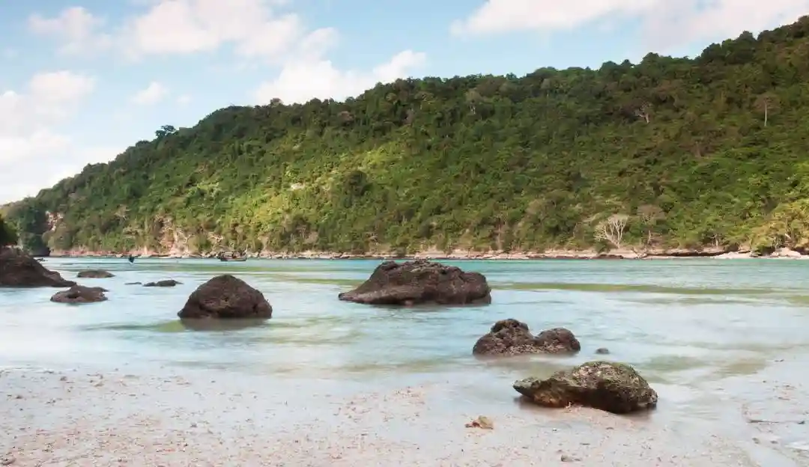

Pulau Nusa Barung adalah kawasan suaka margasatwa seluas 7.635,9 hektar di selatan Jember yang menyimpan keindahan alam liar, ekosistem lengkap, dan rute perjalanan menantang namun terbayar lunas.

Garis pantai berpasir putih dan air laut jernih di kawasan Suaka Margasatwa Pulau Nusa Barung.
Sumber: https://encrypted-tbn0.gstatic.com/licensed-image?q=tbn:ANd9GcSj_XK2iTYsfhMa05WCqmn5W_WqEVushZtUrXJcNulX3IaJBVoFBT6j3wetruxo_VqNMCf_ZHt9kdB_g3oZUU512Rk&s=19Bayangkan kamu membuka Google Maps, mengetik nama sebuah pulau, dan hasilnya cuma titik kecil di tengah Samudra Hindia. Tak ada restoran, tak ada resort, bahkan sinyal pun ogah mampir. Tapi justru di situlah letak pesonanya. Pulau Nusa Barung bukan destinasi untuk semua orang. Tapi bagi kamu yang selama ini puas dengan foto di pantai ramai, ulasan ini mungkin akan mengubah cara pandangmu soal wisata alam. Ada yang bilang pemandangannya mirip Phi-Phi Island di Thailand, tapi versi lebih liar, lebih sunyi, dan tentu saja, lebih Indonesia.
Apa Itu Pulau Nusa Barung dan Kenapa Istimewa?
Nusa Barung bukan sekadar pulau kosong yang tak berpenghuni. Secara resmi, ia berstatus Suaka Margasatwa berdasarkan Keputusan Menteri Kehutanan Nomor SK.314/MENHUT-II/2013. Status konservasinya sudah ada sejak 1920 di era Hindia Belanda. Pulau ini juga merupakan salah satu pulau terluar Indonesia yang menjaga kedaulatan negeri di Samudra Hindia.
Yang bikin Nusa Barung benar-benar spesial:
- Luas: 7.635,9 hektar (Pulau terbesar di Jember).
- Ekosistem: Memiliki empat ekosistem sekaligus: hutan pantai, hutan hujan dataran rendah, hutan rawa, dan hutan payau (mangrove).
- Konservasi: Temuan riset Mei 2024 mengindikasikan adanya bunga Rafflesia yang tumbuh di pulau ini.
Keindahan Alam yang Bikin Geleng Kepala
Saat perahu merapat, kamu akan merasakan sunyi yang menyelimut. Tidak ada hiruk pikuk kota, hanya deburan ombak Samudra Hindia. Beberapa spot yang wajib dieksplorasi antara lain Teluk Plirik dan Teluk Kandangan yang memiliki hutan mangrove lebat serta garis pantai utara yang cocok untuk berkemah.
Nusa Barung adalah rumah bagi satwa liar yang bebas berkeliaran. Kamu bisa menjumpai penyu hijau, penyu sisik, biawak air, rusa, kera abu-abu, hingga berbagai jenis burung endemik. Vegetasinya pun luar biasa, mulai dari pohon Nyamplung, Ketapang, hingga flora langka seperti Mitrephora javanica.
Bagaimana Cara Menuju Pulau Nusa Barung?
Perjalanan ini butuh perencanaan matang. Berikut adalah panduannya:
- Rute: Dari pusat Kota Jember menuju Pelabuhan Puger (38 km, sekitar 1 jam). Kemudian naik perahu sekitar 2,5 jam menuju pulau.
- Sewa Perahu: Berkisar Rp 1.500.000 per perahu (kapasitas 8 orang) dari Pelabuhan Puger.
- Izin: Wajib memiliki izin SIMAKSI (Surat Izin Masuk Kawasan Konservasi) dari BBKSDA Jawa Timur.
"Nusa Barung adalah pengingat bahwa keindahan sejati itu tidak butuh endorsement. Ia berdiri kokoh melindungi keanekaragaman hayatinya dengan diam."
Tips Persiapan Sebelum Berangkat
Karena pulau ini tak berpenghuni, persiapan logistik sangat krusial:
- Bawa air minum dan logistik makanan yang lebih dari cukup.
- Gunakan perlengkapan kemah jika ingin bermalam.
- Waktu terbaik adalah musim kemarau (April - Oktober).
- Bawa alat snorkeling pribadi dan kantong sampah untuk menjaga kebersihan.
Warisan Sejarah dan Misteri
Pada masa VOC, pulau ini merupakan titik ekonomi penting untuk sarang burung walet. Nama "Barung" sendiri memiliki berbagai makna dalam mitos lokal, mulai dari ular besar hingga kegelapan. Namun, selama pengunjung datang dengan niat baik dan menghormati alam, keindahan pulau ini akan menyambut dengan hangat.
FAQ Pulau Nusa Barung
1. Apakah boleh dikunjungi wisatawan umum?
Ya, dengan syarat wajib mengurus izin SIMAKSI dari BBKSDA Jawa Timur.
2. Berapa lama perjalanan dari Jember?
Total perjalanan dari kota hingga sampai di pulau memakan waktu sekitar 3,5 hingga 4 jam.
3. Kapan waktu terbaik berkunjung?
Musim kemarau (April - Oktober) saat ombak Samudra Hindia lebih tenang.
4. Apakah ada penginapan di pulau?
Tidak ada. Pengunjung hanya bisa bermalam dengan cara berkemah (camping).
5. Apa aktivitas utama di sana?
Snorkeling, pengamatan satwa (birdwatching), trekking hutan, dan menikmati ketenangan alam liar.
Sumber: ksdae.kehutanan.go.id, Radar Jember, BBKSDA Jatim, dan Ngopibareng.id.